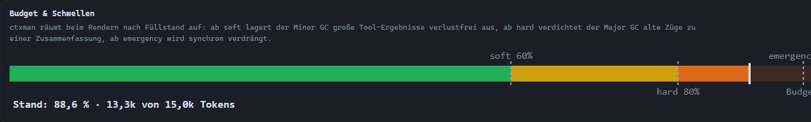
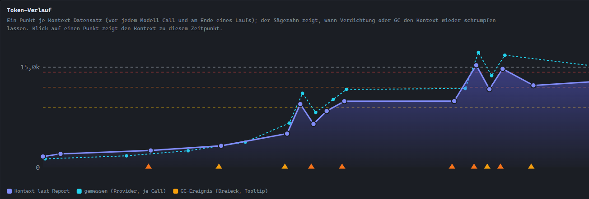
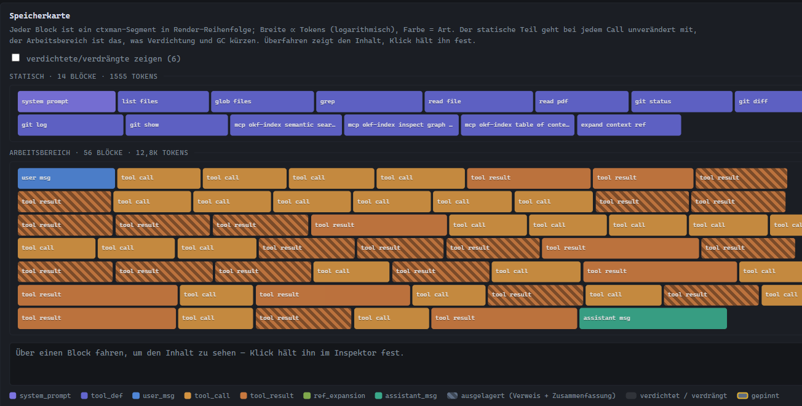
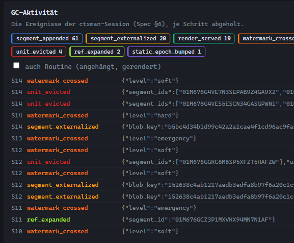

Watching an agent's context grow and shrink
An agent that reads twenty source files sends all of them again with every following model request. At some point the request becomes expensive, slow or too large for the model. agentkit's managed context removes material before that happens. Until now, you could only infer from the agent's behavior what had been removed.
This article explains what agentkit sends to the model, which thresholds trigger a cleanup and what each cleanup does. It then uses screenshots from a recorded run to show how agentkit 0.32 makes those decisions visible in the trace viewer. The run is the one described in the sub-agent article; you do not need to read it first.
1. What the model receives
A model does not remember earlier requests. Each request carries everything the model should consider: the system prompt, the descriptions of all available tools and the conversation so far, including every tool result. This material is the context. Its size is counted in tokens, the units a model reads; a token is roughly three to four characters of English text or code.
Without further management, the context only grows. agentkit has a simple fallback for that case: when a configured token budget is exceeded, it asks the model to summarize older messages. The option --ctx DIR replaces this with ctxman, a context manager that works in smaller steps and keeps originals where it can.
2. Segments and the budget
ctxman stores the context as a list of segments. Each message, tool call and tool result is a segment with a kind, a token count and a state. The segments fall into two regions:
- The static region holds the system prompt and tool descriptions. It is identical in every request, which allows providers to reuse a cached prefix. ctxman never removes anything from it.
- The working region holds the conversation. Cleanups operate only here.
The budget is the number of tokens the rendered context may use. You set it with --ctx-budget; the default is 100,000. Sub-agents get their own managed context with a third of that budget, at least 8,000 tokens. Their saved data lives only in memory and disappears when the helper finishes.
3. Three thresholds, three operations
ctxman compares the context size with three fractions of the budget, called watermarks. Crossing one starts a cleanup of increasing strength:
--ctx-policy; the operations are simplified.The distinction between the first two operations matters. Externalization, done by the minor GC, saves a tool result unchanged in a content-addressed store and leaves a short summary with a reference in the conversation. If the agent needs the original again, it calls expand_context_ref and receives the full text. Nothing is lost. Compaction, done by the major GC, replaces conversation turns with a model-written summary. That summary can omit details, which is why ctxman first extracts facts worth keeping and stores them separately.
A third mechanism works independently of the thresholds. Tool results have a lifetime measured in turns; agentkit sets it to 12. When a tool call and its result exceed it, the minor GC removes the pair. ctxman reports this as unit_evicted.
4. Recording the context at every step
With --trace DIR, agentkit writes every event of a run to a file of newline-delimited JSON. Until version 0.31, the trace contained one context record at the end of a run. A context that grew to the hard watermark and was cleaned up three times looked the same as one that never came close.
agentkit 0.32 writes a context_snapshot record before every model request. With ctxman, the record lists each segment with its kind, token count and state: live, externalized, compacted or evicted. A second record, ctx_events, carries the cleanup events of that step, such as watermark_crossed and segment_externalized. Previously these events were written only to events.jsonl in the context directory, and for sub-agents, which have no such directory, nowhere.
To keep the trace from growing quadratically, each record contains only the messages added since the previous one. After a compaction, the full conversation is written again. The trace still contains everything the agent read, including file contents, so treat it like the source files themselves.
agentkit --ctx .agentkit/ctx --trace .agentkit/trace "Your task"
agentkit viz --openThe second command starts a local viewer and opens it in the browser. It needs a build with the viz feature; the release binaries include it. The trace also works with the terminal UI: agentkit --tui --trace DIR records the same events.
5. Reading one helper's context
The run used a budget of 45,000 tokens, so each helper had 15,000. That is deliberately small: a helper reading a whole crate reaches the watermarks within a few steps, which makes the cleanups easy to see. The screenshots show the context tab for the helper that examined agentkit_work. The viewer's labels are German; the captions translate them.

The token history shows how the helper got there. Each point is one record, taken before a model request. The context grows slowly while the helper lists files and searches, then rises steeply when it starts reading files. The orange triangles mark steps with cleanup events. After the steep rise, the curve drops back several times: those are externalizations of large file contents.

Clicking a point in the viewer loads the context as it was at that time. The memory map below the chart then shows the segments of that request. In Figure 4, each block is one segment; its width grows with its token count on a logarithmic scale. The blue-violet blocks at the top are the static region. The working region below holds the helper's task, its tool calls and its tool results. Hatched tool results were externalized: the model sees their summary and reference, while the original sits in the blob store.

The viewer's composition table summarizes the same state by kind. At the end, tool results made up 74.9 % of the helper's context, and 18 of them had been externalized. The system prompt and tool descriptions together accounted for about 12 %.
The cleanup events show what the minor GC did. In this helper's run, the context crossed a watermark 11 times, ctxman externalized 20 segments, evicted 4 expired call-and-result pairs and served 2 references back to the model through expand_context_ref. No major GC ran: externalizing file contents kept the context below the point where summaries would have been needed.

6. Two token counts
The two lines in Figure 3 come from different sources. ctxman counts tokens locally; in this run it used the o200k tokenizer that matches the model family. The provider reports how many input tokens it actually processed for each request, and agentkit records that as a token_usage event.
For this helper, the provider's count for the last request was 14,400 tokens, while ctxman had computed 13,300. A difference of this size is plausible, because the provider also counts the formatting around each message, which the local count presumably does not include. A much larger gap would suggest that one side counts incorrectly, for example the character-based estimate agentkit uses without the tiktoken feature. The viewer shows both lines so that such a gap becomes visible.
The measured line also shows a detail of the run: several requests exceeded the 15,000-token budget as the provider counts it, although ctxman's own count stayed at or below it. A budget should therefore leave some margin to the model's actual limit.
7. Limits
The viewer reads a file; it cannot change a running context. Pinning a segment or expanding a reference from the browser is not possible, and the viewer shows an externalized segment's summary instead of its original. Live tool results are shown in full; other segments are shortened to 200 characters per record, since storing the full text of every segment in every record would make traces very large.
Small budgets make cleanups frequent, which is useful for a demonstration but not for real tasks. In a first run with a helper budget of 10,000 tokens, one helper stopped with the error that rendering exceeded its budget (Token-Budget überschritten: 10750 von 10000) instead of cleaning up. The default budget leaves far more room, but the case shows that a too-small budget can end a helper's run.
Without --ctx, the viewer still shows a context tab built from the recorded messages, with one block per message and the tool descriptions as a static block. It has no cleanup events, since the fallback compaction does not produce them.
8. Summary
The model receives the full context with every request. ctxman keeps it within a budget by externalizing large tool results at 60 %, compacting older turns at 80 % and evicting at 95 %. Externalized content can be retrieved unchanged; compacted content cannot. agentkit 0.32 records the context before every model request, including each segment's state and the cleanup events, and the trace viewer turns those records into a budget bar, a token history with time travel, a memory map and an event list.
To look at your own runs, add --ctx and --trace to a task and open agentkit viz. The capability guide lists the context options, and the ctxman README and the viewer README describe policies and views in detail.